About this codelab
event Last updated Apr 9, 2025
account_circle Written by Romin Irani and Alvin Prayuda Juniarta Dwiyantoro
In this codelab, you will build out an enhanced application that uses vector search to recommend Yoga poses, incorporating multimodal features like audio instructions, web search integration, and image generation.
Through the codelab, you will employ a step-by-step approach as follows:
- Utilize an existing Hugging Face Dataset of Yoga poses (JSON format).
- Enhance the dataset with descriptions generated by the Gemini API.
- Use Langchain and Firestore integration to create a collection with vector embeddings in Firestore.
- Create a composite index in Firestore for efficient vector search.
- Build an interactive Flask web application featuring:
- Vector search for pose recommendations with metadata filtering (e.g., expertise level).
- Real-time audio instruction generation using the Gemini Live API with voice selection.
- Conversational follow-up capabilities for audio instructions.
- Web search integration using the Gemini Live API and Google Search tool for broader yoga queries with audio responses.
- Text-to-image generation related to web search conversations.
- Deploy the application (optionally) to Google Cloud Run.
The final application will look similar to this:
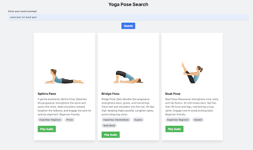
What you'll do
- Design, Build and Deploy a web application that employs Vector Search to recommend Yoga poses.
What you'll learn
- ✅ How to use the Gemini API to generate text content (yoga pose descriptions).
- ✅ How to use Langchain Document Loader for Firestore to load data and generate vector embeddings.
- ✅ How to use Langchain Vector Store for Firestore to perform similarity search with metadata filtering.
- ✅ How to use the Gemini Live API via the Python SDK (
google-genai) for real-time audio generation with voice selection. - ✅ How to implement conversational follow-ups with context management for audio interactions.
- ✅ How to integrate Google Search as a tool within the Gemini Live API for web-based queries.
- ✅ How to use the Imagen 3 API (via the Vertex AI SDK) for text-to-image generation.
- ✅ How to build an interactive frontend with dynamic UI updates using vanilla JavaScript to handle multimodal interactions (text, audio, images).
- ✅ How to structure and run an asynchronous Flask application using an ASGI server like Hypercorn.
What you'll need
- Chrome web browser
- A Gmail account
- A Cloud Project with billing enabled
This codelab, designed for developers of all levels (including beginners), uses Python in its sample application. However, Python knowledge isn't required for understanding the concepts presented.
Create a project
- In the Google Cloud Console, on the project selector page, select or create a Google Cloud project.
- Make sure that billing is enabled for your Cloud project. Learn how to check if billing is enabled on a project .
- You'll use Cloud Shell, a command-line environment running in Google Cloud that comes preloaded with bq. Click Activate Cloud Shell at the top of the Google Cloud console.
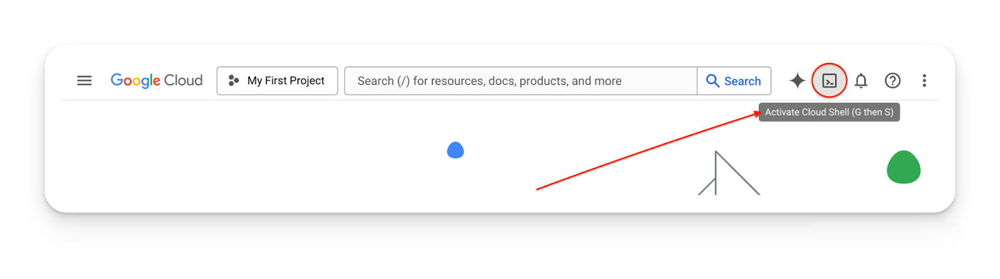
- Once connected to Cloud Shell, you check that you're already authenticated and that the project is set to your project ID using the following command:
gcloud auth list- Run the following command in Cloud Shell to confirm that the gcloud command knows about your project.
gcloud config list project- If your project is not set, use the following command to set it:
gcloud config set project <-YOUR_PROJECT_ID->- Enable the required APIs via the command shown below. This could take a few minutes, so please be patient.
gcloud services enable firestore.googleapis.com \
compute.googleapis.com \
cloudresourcemanager.googleapis.com \
servicenetworking.googleapis.com \
run.googleapis.com \
cloudbuild.googleapis.com \
cloudfunctions.googleapis.com \
aiplatform.googleapis.com \
# texttospeech.googleapis.com # Replaced by Live API via aiplatform
On successful execution of the command, you should see a message similar to the one shown below:
Operation "operations/..." finished successfully.The alternative to the gcloud command is through the console by searching for each product or using this link.
If any API is missed, you can always enable it during the course of the implementation.
Refer documentation for gcloud commands and usage.
Clone repository and setup environment settings
The next step is to clone the sample repository that we will be referencing in the rest of the codelab. Assuming that you are in Cloud Shell, give the following command from your home directory:
git clone https://github.com/deepansharya1111/yoga-poses-recommender-pythonTo launch the editor, click Open Editor on the toolbar of the Cloud Shell window. Click on the menu bar in the top left corner and select File → Open Folder as shown below:
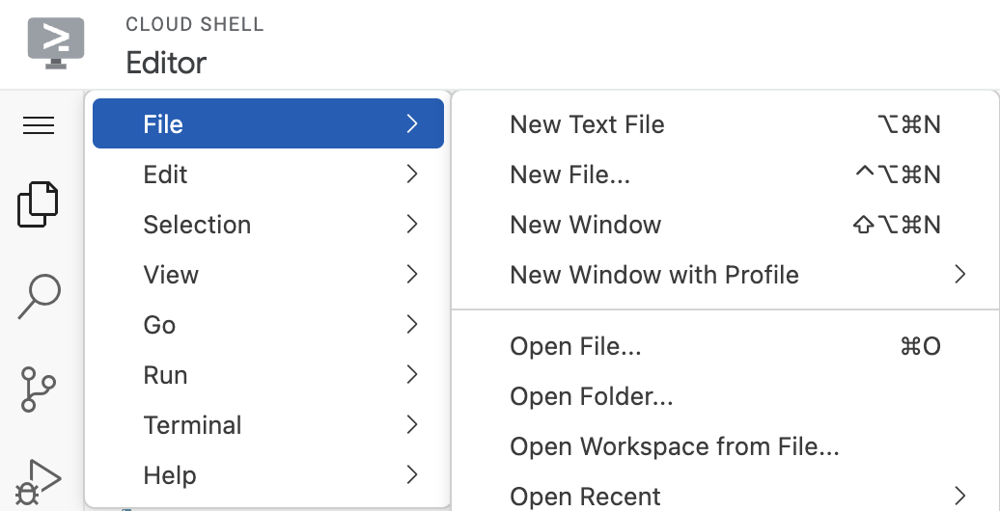
Select the yoga-poses-recommender-python folder and you should see the folder open with the following files as shown below:
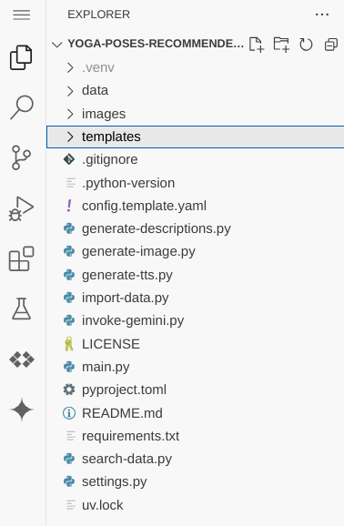
We need to now set up the environment variables that we shall be using.
Click on the config.template.yaml file and you should see the contents as shown below:
project_id: your-project-id
location: us-central1
gemini_model_name: gemini-2.0-flash-001
embedding_model_name: text-embedding-004
image_generation_model_name: imagen-3.0-fast-generate-002
gemini_live_model: gemini-2.0-flash-live-preview-04-09
database: (default)
collection: poses
test_collection: test-poses
top_k: "3" # Default number of search results
port: "8080"
Please update the values for project_id and location as per what you have selected while creating the Google Cloud Project and Firestore Database region. Ideally, we would like the values of the location to be the same for the Google Cloud Project and the Firestore Database, for e.g. us-central1.
For the purpose of this codelab, we are going to go with the pre-configured values (except of course for project_id and location, which you need to set as per your configuration.
The gemini_model_name can also be customised to available gemini models, e.g. gemini-2.0-flash-001. The version postfix (for example, the -001) should be included with every model respectively.
Please save this file as config.yaml in the same folder as the config.template.yaml file in your project.
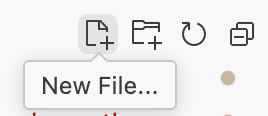
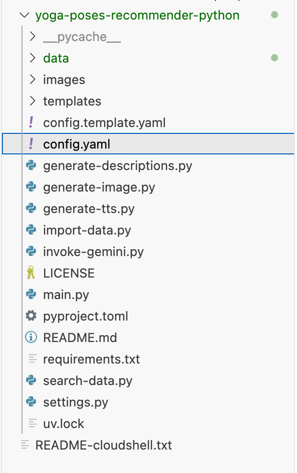
Create a Python Environment
The final step now is to create a Python environment that we shall use locally with all the Python dependencies set up for us.
The required dependencies for the entire project (including helper scripts) are listed in the requirements.txt file. Key libraries include:
flask[async]: Web framework with async support (for `main.py`).google-genai: The unified Python SDK for Google Generative AI (used for Gemini Live API, Gemini text/image models via Vertex AI in `main.py`).langchain-core: Core Langchain library (used across scripts).langchain-google-firestore: Langchain integration for Firestore vector store (used in `main.py`, `import-data.py`, `search-data.py`).langchain-google-vertexai: Langchain integration for Vertex AI embeddings and LLMs (used across scripts).google-cloud-firestore: Direct Firestore client library (used across scripts).google-cloud-aiplatform: Direct Vertex AI client library (needed for Vertex AI backend in `google-genai`).numpy: For numerical operations (used with audio data in `main.py`).hypercorn: ASGI server to run the async Flask app (`main.py`).Pillow: For image handling (used by image generation in `main.py`).tenacity: For adding retry logic to API calls (used in `generate-descriptions.py`).datasets: Hugging Face library to load the initial dataset (used in `import-data.py`).
To summarize, we need to create a virtual Python environment and install these dependencies.
To do that, go to the Command Palette (Ctrl+Shift+P) in Cloud Shell IDE or open the Command Palette from the Gear icon on bottom left and type in Python: Create Environment.
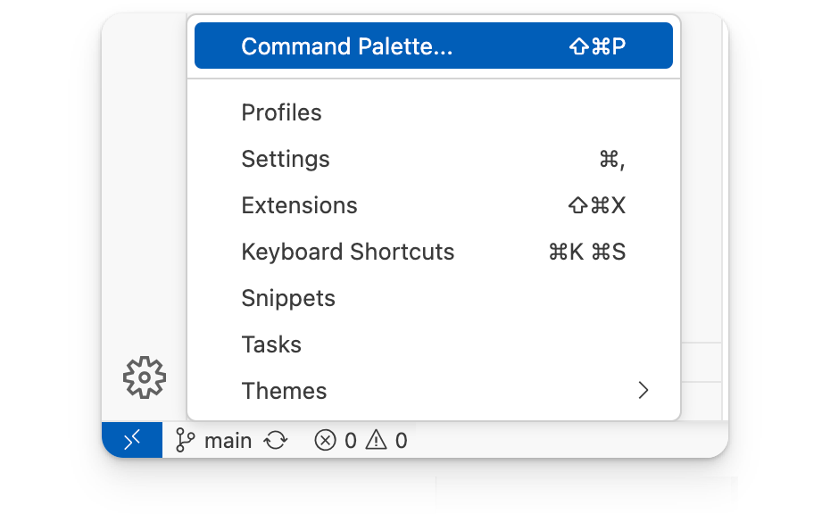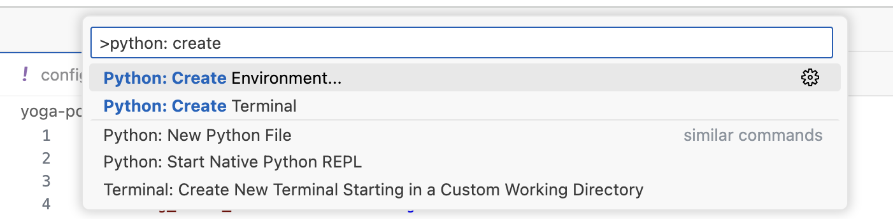
Follow the next few steps to select a Virtual Environment(venv), Python 3.x interpreter and the requirements.txt file.
Once the environment is created, we will need to activate the created environment with the following command, back in the cloud shell terminal.
In the Cloud Shell terminal run the following command:
source .venv/bin/activateYou should see (.venv) in your console. E.g. -> (.venv) yourusername@cloudshell:
pip install -r requirements.txtGreat ! We are now all set to move on to the task of setting up the Firestore database.
Cloud Firestore is a fully-managed serverless document database that we will use as a backend for our application data. Data in Cloud Firestore is structured in collections of documents.
Firestore Database initialization
Visit the Firestore page in the Cloud console.
If you have not initialized a Firestore database before in the project, do create the (default) database by clicking on Create Database. During creation of the database, go with the following values:
- Database ID:
(default), with the brackets (). - Firestore mode:
Standard Edition. - For Configuration options, Select
Firestore Native - For the Security Rules, Select
Open - Select Location Type as
Regionand select theus-central1location for the region. - Create the Database.
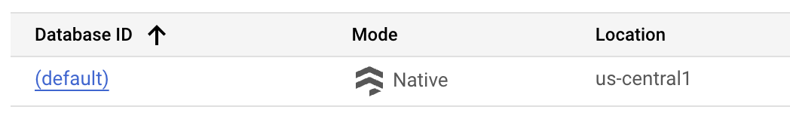
In the next section, we will set the groundwork for creating a collection named poses in our default Firestore database. This collection will hold sample data (documents) or Yoga poses information, that we will then use in our application.
This completes the section for setting up of the Firestore database.
Our first task is to prepare the Yoga Poses dataset that we shall be using for the application. We will start with an existing Hugging Face dataset and then enhance it with additional information.
Check out the Hugging Face Dataset for Yoga Poses. Note that while this codelab uses one of the datasets, you can in fact use any other dataset and follow the same techniques demonstrated to enhance the dataset.
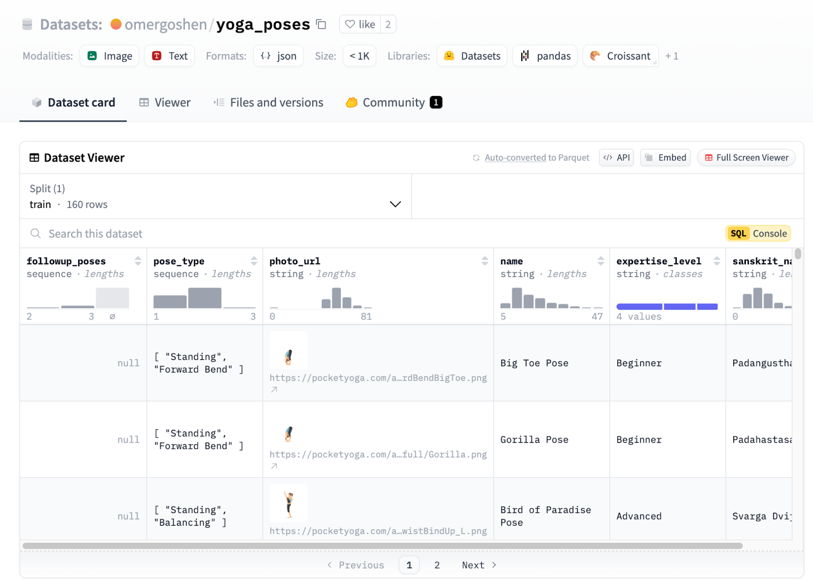
If we go to the Files and versions section, we can get the JSON data file for all the poses.
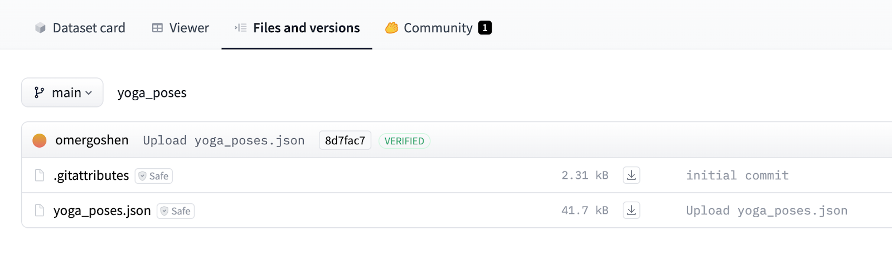
We have downloaded the yoga_poses.json and provided that file to you. This file is named as yoga_poses_alldata.json and it's there in the /data folder.
Go to the data/yoga_poses.json file in the Cloud Shell Editor and take a look at the list of JSON objects, where each JSON object represents a Yoga pose. We have a total of 3 records and a sample record is shown below:
{
"name": "Big Toe Pose",
"sanskrit_name": "Padangusthasana",
"photo_url": "https://pocketyoga.com/assets/images/full/ForwardBendBigToe.png",
"expertise_level": "Beginner",
"pose_type": ["Standing", "Forward Bend"]
}Now is a great opportunity for us to introduce Gemini and how we can use the default model itself to generate a description field for it.
In the Cloud Shell Editor, go to the generate-descriptions.py file. The contents of this file are shown below:
import json
import time
import logging
import vertexai
from langchain_google_vertexai import VertexAI
from tenacity import retry, stop_after_attempt, wait_exponential
from settings import get_settings
settings = get_settings()
logging.basicConfig(
level=logging.INFO, format="%(asctime)s - %(levelname)s - %(message)s"
)
# Initialize Vertex AI SDK
vertexai.init(project=settings.project_id, location=settings.location)
logging.info("Done Initializing Vertex AI SDK")
@retry(
stop=stop_after_attempt(5),
wait=wait_exponential(multiplier=1, min=4, max=10),
)
def generate_description(pose_name, sanskrit_name, expertise_level, pose_types):
"""Generates a description for a yoga pose using the Gemini API."""
prompt = f"""
Generate a concise description (max 50 words) for the yoga pose: {pose_name}
Also known as: {sanskrit_name}
Expertise Level: {expertise_level}
Pose Type: {", ".join(pose_types)}
Include key benefits and any important alignment cues.
"""
try:
model = VertexAI(model_name=settings.gemini_model_name, verbose=True)
response = model.invoke(prompt)
return response
except Exception as e:
logging.info(f"Error generating description for {pose_name}: {e}")
return ""
def add_descriptions_to_json(input_file, output_file):
"""Loads JSON data, adds descriptions, and saves the updated data."""
with open(input_file, "r") as f:
yoga_poses = json.load(f)
total_poses = len(yoga_poses)
processed_count = 0
for pose in yoga_poses:
if pose["name"] != " Pose":
start_time = time.time() # Record start time
pose["description"] = generate_description(
pose["name"],
pose["sanskrit_name"],
pose["expertise_level"],
pose["pose_type"],
)
end_time = time.time() # Record end time
processed_count += 1
end_time = time.time() # Record end time
time_taken = end_time - start_time
logging.info(
f"Processed: {processed_count}/{total_poses} - {pose['name']} ({time_taken:.2f} seconds)"
)
else:
pose["description"] = ""
processed_count += 1
logging.info(
f"Processed: {processed_count}/{total_poses} - {pose['name']} ({time_taken:.2f} seconds)"
)
# Adding a delay to avoid rate limit
time.sleep(30)
with open(output_file, "w") as f:
json.dump(yoga_poses, f, indent=2)
def main():
# File paths
input_file = "./data/yoga_poses.json"
output_file = "./data/yoga_poses_with_descriptions.json"
# Add descriptions and save the updated JSON
add_descriptions_to_json(input_file, output_file)
if __name__ == "__main__":
main()
This application will add a new description field to each Yoga pose JSON record. It will obtain the description via a call to the Gemini model, where we will provide it with the necessary prompt. The field is added to the JSON file and the new file is written to data/yoga_poses_with_descriptions.json file.
Let's go through the main steps:
- In the
main()function, you will find that it invokes theadd_descriptions_to_jsonfunction and provides the input file and the output file expected. - The
add_descriptions_to_jsonfunction does the following for each JSON record i.e. Yoga post information: - It extracts out the
pose_name,sanskrit_name,expertise_levelandpose_types. - It invokes the generate_description function that constructs a prompt and then invokes the Langchain VertexAI model class to get the response text.
- This response text is then added to the JSON object.
- The updated JSON list of objects is then written to the destination file.
Let us Run this application
In the terminal window with your recently active python (.venv) environment, run the following commands:
In the Cloud Shell terminal, navigate to the yoga-poses-recommender-python folder and run the following command:
python generate-descriptions.pyIf you are asked for any authorization, please go ahead and provide that.
You will find that the application starts executing. We have added a delay of 30 seconds between records to avoid any rate limit quotas that could be there on new Google Cloud accounts, so please be patient.
A sample run in progress is shown below:

Once all the 3 records have been enhanced with the Gemini call, a file data/yoga_poses_with_description.json will be generated. You can take a look at that.
We are now ready with our data file and the next step is to understand how to populate a Firestore Database with it, along with embeddings generation.
We have the data/yoga_poses_with_description.json file and now need to populate the Firestore Database with it and importantly, generate the Vector Embeddings for each of the records. The Vector Embeddings will be useful later on when we have to do a similarity search on them with the user query that has been provided in natural language.
We will be using the Langchain Firestore components to implement the above process.
The steps to do that will be as follows:
- We will convert the list of JSON objects into a list of Langchain Document objects. Each document will have two attributes:
page_contentandmetadata. The metadata object will contain the entire JSON object that has attributes likename,description,sanskrit_name, etc. Thepage_contentwill be a string text that will be a concatenation of a few fields. - Once we have a list of
Documentobjects, we will be using theFirestoreVectorStoreLangchain class and specifically thefrom_documentsmethod with this list of documents, a collection name (we are using theTEST_COLLECTIONvariable that points totest-poses), a Vertex AI Embedding class and the Firestore connection details (PROJECT_IDandDATABASEname). This will create the collection and will also generate anembeddingfield for each of the attributes.
The code for import-data.py is given below (parts of the code have been truncated for brevity):
...
def create_langchain_documents(poses):
"""Creates a list of Langchain Documents from a list of poses."""
documents = []
for pose in poses:
# Convert the pose to a string representation for page_content
page_content = (
f"name: {pose.get('name', '')}\n"
f"description: {pose.get('description', '')}\n"
f"sanskrit_name: {pose.get('sanskrit_name', '')}\n"
f"expertise_level: {pose.get('expertise_level', 'N/A')}\n"
f"pose_type: {pose.get('pose_type', 'N/A')}\n"
).strip()
# The metadata will be the whole pose
metadata = pose
document = Document(page_content=page_content, metadata=metadata)
documents.append(document)
logging.info(f"Created {len(documents)} Langchain documents.")
return documents
def main():
all_poses = load_yoga_poses_data_from_local_file(
"./data/yoga_poses_with_descriptions.json"
)
documents = create_langchain_documents(all_poses)
logging.info(
f"Successfully created langchain documents. Total documents: {len(documents)}"
)
embedding = VertexAIEmbeddings(
model_name=settings.embedding_model_name,
project=settings.project_id,
location=settings.location,
)
client = firestore.Client(project=settings.project_id, database=settings.database)
vector_store = FirestoreVectorStore.from_documents(
client=client,
collection=settings.test_collection,
documents=documents,
embedding=embedding,
)
logging.info("Added documents to the vector store.")
if __name__ == "__main__":
main()
Let us run this application. In the terminal window with the active python (.venv) environment, run the following command inside the yoga-poses-recommender-python folder:
python import-data.pyIf all goes well, you should see a message similar to the one below:
2025-01-21 14:50:06,479 - INFO - Added documents to the vector store.To check if the records have been inserted successfully and the embeddings have been generated, visit the Firestore page in the Cloud console.
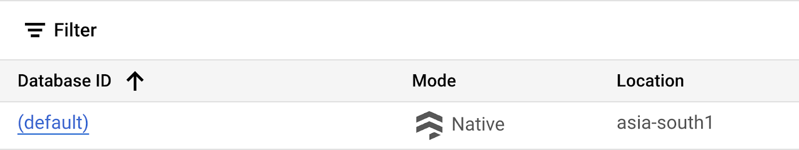
Click on the (default) database, this should show the test-poses collection and multiple documents under that collection. Each document is one Yoga pose.
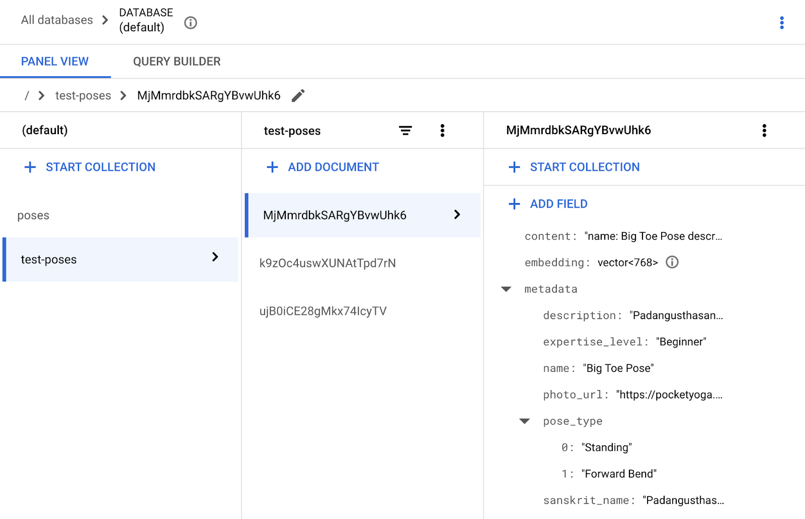
Click on any of the documents to investigate the fields. In addition to the fields that we imported, you will also find the embedding field, which is a Vector field that has been generated automatically for you via the Langchain VertexAIEmbeddings class that we used, in which we provided the text-embedding-004 Vertex AI Embedding model.
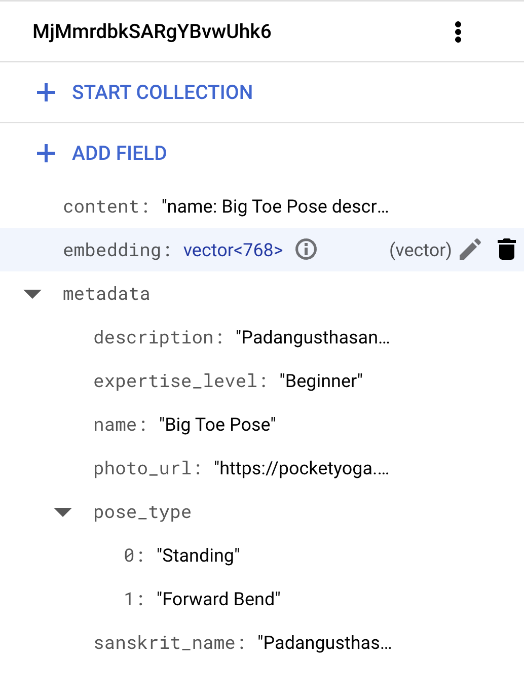
Now that we have the records uploaded into the Firestore Database with the embeddings in place, we can move to the next step and see how to do Vector Similarity Search in Firestore.
We will now create the poses collection, which is a full list of 160 Yoga poses, for which we have generated a database import file that you can directly import. This is done to save time in the lab. The process to generate the database that contains the description and embeddings, is the same that we saw in the previous section.
Import the database by following the steps given below:
- Create a bucket in your project with the
gsutilcommand given below. Replace the<-PROJECT_ID->variable in the command below with your Google Cloud Project Id.
gsutil mb -l us-central1 gs://<-PROJECT_ID->-my-bucket- Now that the bucket is created, we need to copy the database export that we have prepared into this bucket, before we can import it into the Firebase database. Use the command given below:
gsutil cp -r gs://yoga-database-firestore-export-bucket/2025-01-27T05:11:02_62615 gs://<-PROJECT_ID->-my-bucketNow that we have the data to import, we can move to the final step of importing the data into the Firebase database (default) that we've created.
- Use the gcloud command given below:
gcloud firestore import gs://<-PROJECT_ID->-my-bucket/2025-01-27T05:11:02_62615The import will take a few seconds and once it's ready, you can validate your Firestore database and the collection by visiting https://console.cloud.google.com/firestore/databases, select the (default) database and the poses collection as shown below:
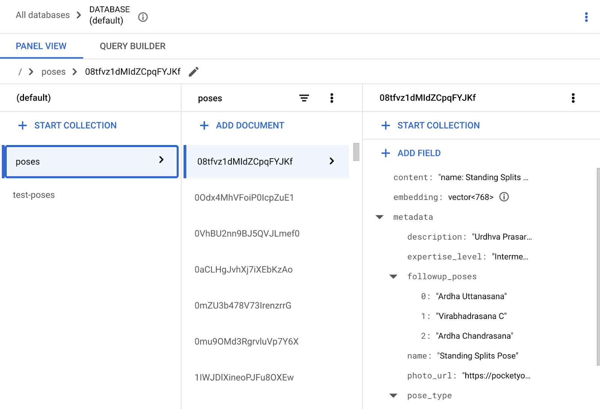
This completes the creation of the Firestore collection that we will be using in our application.
To perform Vector Similarity search, we will take in the query from the user. An example of this query can be "Suggest me some exercises to relieve back pain".
Take a look at the search-data.py file. The key function to look at is the search function, which is shown below. At a high level, it creates an embedding class that shall be used to generate the embedding for the user query. It then uses the FirestoreVectorStore class to invoke its similarity_search function.
def search(query: str):
"""Executes Firestore Vector Similarity Search"""
embedding = VertexAIEmbeddings(
model_name=settings.embedding_model_name,
project=settings.project_id,
location=settings.location,
)
client = firestore.Client(project=settings.project_id, database=settings.database)
vector_store = FirestoreVectorStore(
client=client, collection=settings.collection, embedding_service=embedding
)
logging.info(f"Now executing query: {query}")
results: list[Document] = vector_store.similarity_search(
query=query, k=int(settings.top_k), include_metadata=True
)
for result in results:
print(result.page_content)Create Firestore composite index
Before you run this with a few query examples, you must first generate a Firestore composite index, which is needed for your search queries to succeed. If you run the application without creating the index, an error indicating that you need to create the index first will be displayed with the command to create the index first.
The gcloud command to create the composite index is shown below:
gcloud firestore indexes composite create --project=<-YOUR_PROJECT_ID-> --collection-group=poses --query-scope=COLLECTION --field-config=vector-config='{"dimension":"768","flat": "{}"}',field-path=embeddingThe index will take a few minutes to complete since there are 150+ records that are present in the database. Once it is complete, you can view the index via the command shown below:
gcloud firestore indexes composite listYou should see the index that you just created in the list.
Try out the following command now:
python search-data.py --prompt "Recommend me some exercises for back pain relief"You should have a few recommendations provided to you. A sample run is shown below:
2025-01-21 15:48:51,282 - INFO - Now executing query: Recommend me some exercises for back pain relief
name: Supine Spinal Twist Pose
description: A gentle supine twist (Supta Matsyendrasana), great for beginners. Releases spinal tension, improves digestion, and calms the nervous system. Keep shoulders flat on the floor and lengthen the spine.
sanskrit_name: Supta Matsyendrasana
expertise_level: Beginner
pose_type: ['Supine', 'Twist']
name: Cow Pose
description: Cow Pose (Bitilasana) is a gentle backbend, stretching the chest, shoulders, and abdomen. Maintain a neutral spine, lengthen the tailbone, and avoid hyperextension. Benefits include improved posture and stress relief.
sanskrit_name: Bitilasana
expertise_level: Beginner
pose_type: ['Arm Leg Support', 'Back Bend']
name: Locust I Pose
description: Locust Pose I (Shalabhasana A) strengthens the back, glutes, and shoulders. Lie prone, lift chest and legs simultaneously, engaging back muscles. Keep hips grounded and gaze slightly forward.
sanskrit_name: Shalabhasana A
expertise_level: Intermediate
pose_type: ['Prone', 'Back Bend']Once you have this working, we have now understood how to work the Firestore Vector Database to upload records, generate embeddings and do a Vector Similarity Search. We can now create a web application which will integrate the vector search into a web front-end.
The Python web application is available in the yoga-poses-recommender-python directory, primarily within main.py (backend) and templates/index.html (frontend).
This version utilizes asynchronous programming with Flask, the Gemini Live API for real-time audio and web search, and the Imagen 3 API for image generation, creating a rich multimodal experience.
The Python Flask web application is available in main.py file and the front-end HTML file is present in the templates/index.html.
It is recommended that you take a look at both the files. Start first with the main.py file that contains the /search handler, which takes the prompt that has been passed from the front-end HTML index.html file. This then invokes the search method, which does the Vector Similarity search that we looked at in the previous section.
The response is then sent back to the index.html with the list of recommendations. The index.html then displays the recommendations as different cards.
Run the application locally
In the terminal window with the active python (.venv) environment, run the following command inside the yoga-poses-recommender-python folder:
python main.pyA sample execution is shown below:
Starting Hypercorn server on http://127.0.0.1:8080...
2025-04-18 22:08:15 +0530] [40190] [INFO] Running on http://127.0.0.1:8080 (CTRL + C to quit)
2025-04-18 22:08:15,169 - INFO - Running on http://127.0.0.1:8080 (CTRL + C to quit)Once up and running, visit the home URL of the application, by clicking the Web Preview button shown below and preview on Port 8080:
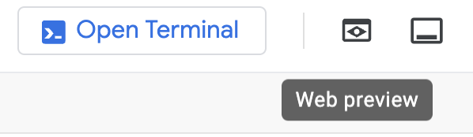
It should show you the index.html file served as shown below:
Provide a sample query (Example : Provide me some exercises for back pain relief) and click on the Search button. This should retrieve some recommendations from the database. You will also see a Play Audio button, which will generate an audio stream based on the description, which you can hear directly.
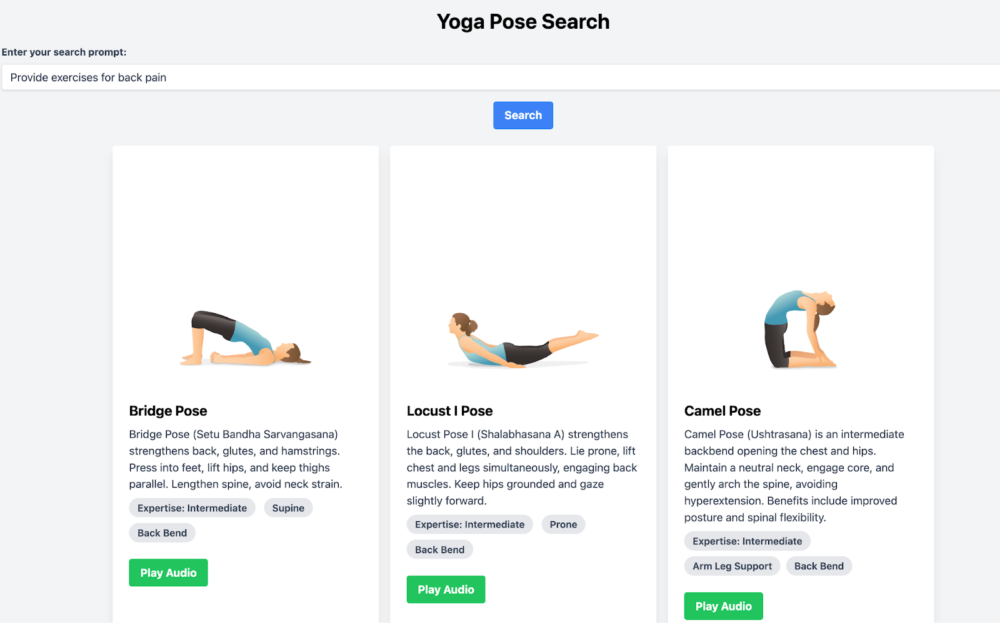
You can also use the Web Search with Gemini Live API for results from the internet and generate images with Imagen 3 Api
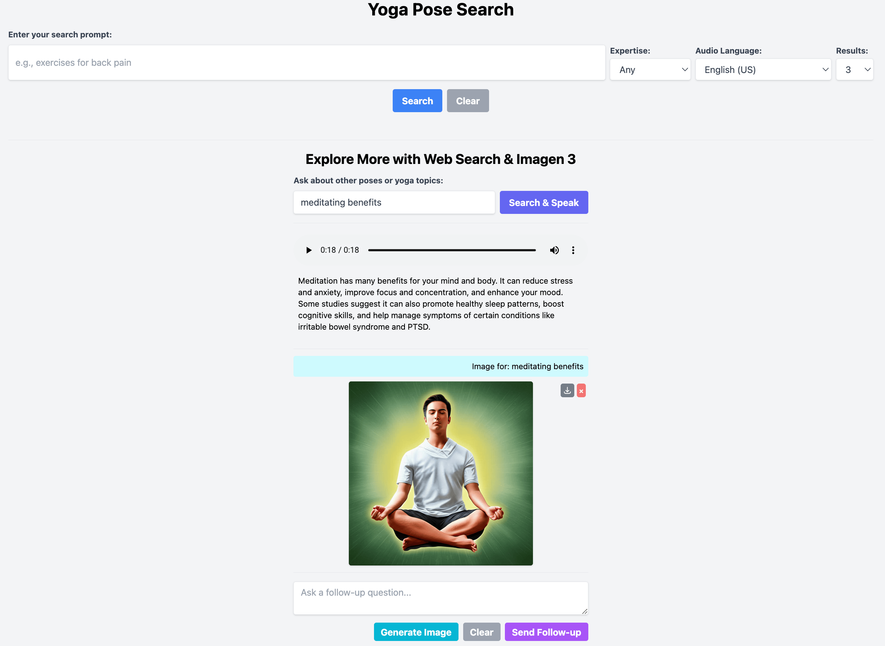
Backend Overview (main.py)
- Server Technology (ASGI vs. WSGI):
- The application integrates the Gemini Live API for audio generation (`/generate_audio`, `/web_search_audio`). This API interaction is inherently *asynchronous* (streaming).
- Standard WSGI servers (like basic Flask `app.run()` or Gunicorn without async workers) are not designed for native handling of Python's `asyncio` features used in these Live API calls.
- Therefore, this application uses an **ASGI** (Asynchronous Server Gateway Interface) server, specifically `Hypercorn` (added to `requirements.txt` and `pyproject.toml`). ASGI servers efficiently handle asynchronous Python code.
- The application is launched using `hypercorn.asyncio.serve(app, config)` (found at the bottom of `main.py`), starting the Hypercorn server to manage the Flask application and its async routes correctly.
- Async Routes in Flask:
- To enable ASGI compatibility and handle the asynchronous Live API calls, specific Flask routes (
/generate_audio,/web_search_audio) are defined usingasync definstead of the standarddef. - This requires Flask to be installed with its async extras (`pip install flask[async]` or via `uv`), reflected in the dependencies.
- Synchronous routes (like
/searchand/generate_image) that don't involve long-waiting I/O operations still use standarddef. - Using `async def` allows the server to efficiently manage the waiting periods during the Live API's audio streaming without blocking other requests, improving responsiveness.
- To enable ASGI compatibility and handle the asynchronous Live API calls, specific Flask routes (
- Gemini Client (
google-genaiSDK): Uses the unified SDK, initializing the client specifically for Vertex AI endpoints usinggenai.Client(vertexai=True, project=..., location=...). This handles authentication and API targeting for both Gemini and Imagen models hosted on Vertex AI. - Search Endpoint (
/search- Sync):- Receives the user's text prompt, desired number of results (`num_results`), and selected expertise level (`expertise_filter`) from the frontend.
- Calls the
searchfunction.
- Search Function (
search):- Performs vector similarity search using
FirestoreVectorStore.similarity_searchfrom the `langchain-google-firestore` library. - Fetches a larger number of initial results (`initial_k=50`) with metadata included (`include_metadata=True`).
- Filters these results in Python based on the `expertise_filter` selected by the user (checking `result.metadata.metadata.expertise_level`).
- Returns the top `num_results` of the filtered list.
- Performs vector similarity search using
- Audio Instruction Endpoint (
/generate_audio- Async):- Receives `pose_name`, optional `follow_up_text`, optional `voice_name`, and `language_code`.
- Uses the Gemini Live API via
client.aio.live.connectwith the model specified by `gemini_live_model` in `config.yaml`. - Configures the session for `AUDIO` response modality and requests `output_audio_transcription` using `LiveConnectConfig`. Sets the voice using `PrebuiltVoiceConfig(voice_name=...)` and `language_code`.
- Manages conversation history (simple in-memory dictionary `conversation_histories`) by sending previous turns along with the current user input. Clears history for new initial requests. Adds system instructions for non-English languages.
- Collects audio chunks (`inline_data.data`) and text transcription (`output_transcription.text`) from the streamed response.
- Updates the conversation history with the user's turn and the model's text response.
- Packages the collected audio data into a WAV format in memory using `numpy`, `wave`, and `io`.
- Returns a JSON response containing the base64-encoded WAV audio (`audio_base64`) and the `transcription`.
- Web Search Audio Endpoint (
/web_search_audio- Async):- Receives an initial `query` or `follow_up_text`, and `language_code`.
- Uses the Live API (`aio.live.connect`) similar to `/generate_audio`.
- Includes the `GoogleSearch()` tool in the `LiveConnectConfig`'s `tools` list.
- Manages a separate conversation history (`web_search_user1`). Adds system instructions for non-English languages.
- Sends the user query/follow-up to the model, which can then use the Google Search tool if needed.
- Collects audio and transcription.
- Updates history and returns JSON with base64 audio and transcription.
- Image Generation Endpoint (
/generate_image- Sync):- Receives a text `prompt`.
- Uses the standard `client.models.generate_content` API (synchronous).
- Specifies the image generation model from `config.yaml` (e.g., `imagen-3.0-fast-generate-002`) and requests `['TEXT', 'IMAGE']` modalities using `GenerateContentConfig`.
- Extracts the image data (`part.inline_data.data`) and text response (`part.text`) from the response parts.
- Returns JSON with base64-encoded image (`image_base64`), `mime_type`, and `text`.
Frontend Overview (templates/index.html)
- Layout: Uses Tailwind CSS for styling.
- Search Form: Includes dropdowns for selecting "Expertise" level, number of "Results", and "Audio Language". Has "Search" and "Clear" buttons. The Clear button's state (enabled/disabled) is managed by JavaScript based on input text presence.
- Pose Cards: Display pose details fetched from `/search`. Each card includes:
- Image (`photo_url`), Name, Description, Expertise Level, Pose Type.
- "Play Audio Instructions" button.
- Voice selection dropdown (` <-select class="voice-select-dropdown"-> `) for choosing different TTS voices (e.g., Aoede, Puck).
- An area (`.audio-transcript-area`) to dynamically display audio players (`